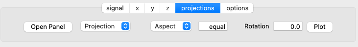
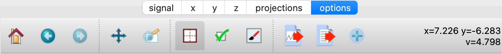

Python Graphical User Interface¶
A PyQT GUI has been created to make it easier to keep track of the loaded NeXus files and the results of any subsequent analysis. It is invoked from the command line by:
> nexpy
Note
This assumes that the Python ‘bin’ directory is in your standard shell path.

The illustration shows the main features of the GUI:
- 1) Tree Pane
- This contains the tree structure of NeXus files opened in the File menu, non-NeXus files that have been imported and converted into the NeXus format using one of the NeXus readers, and NXroot, NXentry, or NXdata groups added from the shell. Various actions on the data can be performed by right-clicking a tree item, include plotting, renaming, fitting and deleting the data.
- 2) Plot Pane
- This contains plots produced by (a) the Data:Plot Data menu item, which operates on the NeXus data selected in the tree, (b) right-clicking on NeXus data in the tree, or (c) using NeXus data Plot methods from the shell. If an NXdata, NXmonitor, or NXlog group is plotted, the rank, dimensions, and plotting axes are determined automatically. If the rank of the data is greater than two, a two-dimensional slice is extracted from the data. The GUI allows the selection of alternative slices using one of the axis panels (see below). If an NXfield is selected, the axes can be chosen from other NXfields in the same group. It is possible to open other plot windows and switch between them using the Window menu or keyboard shortcuts (see below).
- 3) Shell Pane
- This is an iPython shell, with NeXpy already imported (as * so no prefixes are necessary), along with Numpy (as np) and Pylab (as plt). Any assignments to items in the tree pane are automatically reflected in the tree pane, and new NXroot or NXentry objects can be added to the tree from the iPython shell. NeXus data plots commands from the shell will appear in the plot pane, and Matplotlib commands can be used to modify the plot characteristics. The shell has enhanced features such as autocompletion of NeXus attributes and tooltips containing module docstrings when you open the module parentheses.
- 4) Axis Panels
- The tabbed panels below the plot can be used to modify the plots. The number of panels depends on the rank of the original data. The ‘signal’, ‘x’ and ‘y’ panels have text boxes and sliders for adjusting the plotting limits. For rank two or more, a projection panel allows the plotting of projections along different directions, using the current axis limits. For ranks greater than two, a ‘z’ panel allows the other dimensions to be varied. Finally, the ‘options’ panel provides access to the standard Matplotlib tools for modifying the plots.
- 5) Status Bar
- The values and attributes of the currently selected item in the tree are displayed in the status bar.
- 6) Tooltips
- The NeXus tree structure of an item in the tree pane will be displayed as a tooltip when the cursor hovers over it.
Adding NeXus Data to the Tree¶
NXroot groups that are displayed in the tree pane are all children of a group of class NXtree, known as ‘tree’. If you create a NeXus group dynamically in the iPython shell, it can be added to the tree pane using the tree’s add method:
>>> a=NXroot()
>>> a.entry = NXentry()
>>> tree.add(a)
If the group is an NXroot group, it will have the name used in the shell. If the group is not an NXroot group, the data will be wrapped automatically in an NXroot group and given a default name that doesn’t conflict with existing tree nodes, e.g., w4.
Note
The NXroot class is still considered to be the root of the NeXus tree in shell commands. The NXtree group is only used by the GUI and cannot be saved to a file.
Warning
In python, an object may be accessible within the shell with more than one name. NeXpy searches the shell dictionary for an object with the same ID as the added NeXus object and so may choose a different name. The object in the tree can be renamed.
Plotting NeXus Data¶
NXdata, NXmonitor, and NXlog data can be plotted by selecting a group on the tree and choosing “Plot Data” from the Data menu or by double-clicking the item on the tree (or right-clicking for over-plots). Below the plot pane, a series of tabs allow manipulation of the plot limits and parameters.
Signal Tab

The signal tab contains text boxes and sliders to adjust the intensity limits, a checkbox to plot the intensity on a log scale, and a dropdown menu to select a color palette.
Note
For a one-dimensional plot, there is no signal tab. The intensity is adjusted using the y-tab.
X/Y Tab

The x and y-tabs contains text boxes and sliders to adjust the axis limits and a dropdown menu to select the axis to be plotted along x and y, respectively. The names correspond to the axis names in the NXdata group.
Note
If the x-axis values (and/or y-axis values in two-dimensional plots) are monotonically decreasing, the axis is flipped before plotting. Currently, the sliders only work for monotonically increasing axes.
Z Tab

If the data rank is three or more, the 2D plot vs x and y is a projection along the remaining axes. The z-tab sets the limits for those projections. It contains a dropdown menu for selecting the axis to be summed over and two text boxes for selecting the projection limits. When the data are first plotted, only the top slice if plotted, i.e., all the z-axis limits are set to their minimum value.
When ‘Lock’ is checked, the difference between the limits of the selected z-axis is fixed. This allows successive images along the z-axis to be plotted by clicking the text-box arrows in increments of the difference between the two limits. If you use the text-box arrows or the terminal arrow keys to change the z-limits when they are locked together, the new plot is updated automatically. Otherwise, the data is only replotted when you force a replot using the toolbar (see below).
Note
Make sure that the value of both limit boxes is entered, e.g., by pressing return after editing their values, before clicking on the ‘lock’ checkbox.
Warning
There may be a bug in PySide, which causes multiple steps to occur for each arrow click. You can avoid this by selecting the ‘maximum’ text-box and using the terminal arrow keys.
When stepping through the z-values, the ‘Autoscale’ checkbox determines whether the plot automatically scales the signal to the maximum intensity of the slice or is set to the current signal limits.
Note
When ‘Autoscale’ is checked, it is not possible to adjust the limits in the Signal Tab.

The toolbar on the right provides further controls for replotting data as a function of z. The first button on the left forces a replot, e.g., when you have changed z-axis limits or turned on auto-scaling. The other buttons are for stepping through the z-values automatically, with ‘back’, ‘pause’, and ‘forward’ controls. The default speed is one frame per second, but after the first click on the play button, subsequent clicks will reduce the frame interval by a factor two.
Projection Tab
The projection tab allows the data to be projected along one or two dimensions. The limits are set by the x, y, and z-tabs, while the projection axes are selected using the dropdown boxes. For a one-dimensional projection, select ‘None’ from the y box. The projections may be plotted in a separate window, using the ‘Plot’ button or saved to a scratch NXdata group within ‘w0’ on the tree. A checkbox allows the overplotting of one-dimensional projections.

The projection tab also contains a button to open a separate projection panel that can be used instead of the tabbed interface. This interface is more convenient when making a systematic exploration of different projections limits. The x and y limits of the plot are displayed as a dashed rectangle.

Options Tab
The options tab provides the standard Matplotlib toolbar. The ‘Home’ button restores all plotting limits to their defaults. The ‘arrow’ buttons cycle through previous plots. The ‘zoom’ button allows rectangles to be dragged over the plot to define new plotting limits. The ‘options’ button allows the Matplotlib plotting parameters (markers, colors, etc.) to be changed. The ‘Save’ button saves the figure to a PNG file. The final button adds the plotted data to the tree pane, as an NXdata group in ‘w0’.
Fitting NeXus Data¶
It is possible to fit one-dimensional data using the non-linear least-squares fitting package, lmfit-py, by selecting a group on the tree and choosing “Fit Data” from the Data menu or by right-clicking on the group. This opens a dialog window that allows multiple functions to be combined, with the option of fixing or limiting parameters.

The fit can be plotted, along with the constituent functions, in the main plotting window and the fitting parameters displayed in a message window.
The original data, the fitted data, constituent functions, and the parameters can all be saved to an NXentry group in the Tree Pane for subsequent plotting, refitting, or saving to a NeXus file. The group is an NXentry group, with name ‘f1’, ‘f2’, etc., stored in the default scratch NXroot group, w0. If you choose to fit this entry again, it will load the functions and parameters from the saved fit.
Defining a function¶
User-defined functions can be added to their private functions directory in ~/.nexpy/functions. The file must define the name of the function, a list of parameter names, and provide two modules to return the function values and starting parameters, respectively.
As an example, here is the complete Gaussian function:
import numpy as np
function_name = 'Gaussian'
parameters = ['Integral', 'Sigma', 'Center']
factor = np.sqrt(2*np.pi)
def values(x, p):
integral, sigma, center = p
return integral * np.exp(-(x-center)**2/(2*sigma**2)) / (sigma * factor)
def guess(x, y):
center = (x*y).sum()/y.sum()
sigma = np.sqrt(abs(((x-center)**2*y).sum()/y.sum()))
integral = y.max() * sigma * factor
return integral, sigma, center
NeXpy uses the function’s ‘guess’ module to produce starting parameters automatically when the function is loaded. When each function is added to the model, the estimated y-values produced by that function will be subtracted from the data before the next function estimate. It is useful therefore to choose the order of adding functions carefully. For example, if a peak is sitting on a sloping background, the background function should be loaded first since it is estimated from the first and last data points. This guess will be subtracted before estimating the peak parameters. Obviously, the more functions that are added, the less reliable the guesses will be. Starting parameters will have to be entered manually before the fit in those cases.
Note
If it is not possible to estimate starting parameters, just return values that do not trigger an exception.
Importing NeXus Data¶
NeXpy can import data stored in a number of other formats, including SPEC files, TIFF images, and text files, using the File:Import menus. If a file format is not currently supported, the user can write their own. The following is an example of a module that reads the original format and returns NeXus data:
def get_data(filename):
from libtiff import TIFF
im = TIFF.open(filename)
z = im.read_image()
y = range(z.shape[0])
x = range(z.shape[1])
return NXentry(NXdata(z,(y,x)))
This could be run in the shell pane and then added to the tree using:
>>> tree.add(get_data('image.tif'))
Existing Readers¶
NeXpy is currently distributed with readers for the following format:
TIFF Images
This reader will import most TIFF images, including those with floating point pixels.
CBF Files
This reader will read files stored in the Crystallographic Binary Format, using the PyCBF library. Header information is stored in a NXnote.
Image Stack
This reader will read a stack of images, currently either TIFF or CBF, into a three-dimensional NXdata group. The image stack must be stored in separate files in a single directory, that are grouped with a common prefix followed by an integer defining the stack sequence.
Text Files
This reader will read ASCII data stored in two or three columns, containing the x and y values, and, optionally, errors. One or more header lines can be skipped. A more flexible text importer, allowing the selection of data from multiple columns, is under development.
SPEC Files
This reader will read multiple SPEC scans from a single SPEC log file, creating a separate NXentry for each scan. All the columns in each scan are read into the NXdata group, with the default signal defined by the last column. Mesh scans are converted to multi-dimensional data, with axes defined by the scan command. It is possible to plot different columns once the scans are imported.
SPE/NXSPE Files
This will read both the ASCII and binary (HDF5) versions of the neutron time-of-flight SPE intermediate format into standard-conforming NeXus files. The data is stored as S(phi,E), but, if the incident energy and (Q,E) bins are also defined, the data will will also be converted into S(Q,E). The current version does not read the ASCII PHX files used to define instrumental parameters, but there are plans to add that in the future.
Defining a Reader¶
With a little knowledge of PyQt, it is possible to add a reader to the File:Import menu using the existing samples as a guide in the nexpy.readers directory. User-defined import dialogs can be added to their private readers directory in ~/.nexpy/readers.
Here is an example of an import dialog:
"""
Module to read in a TIFF file and convert it to NeXus.
Each importer needs to layout the GUI buttons necessary for defining the
imported file and its attributes and a single module, get_data, which returns
an NXroot or NXentry object. This will be added to the NeXpy tree.
Two GUI elements are provided for convenience:
ImportDialog.filebox: Contains a "Choose File" button and a text box. Both
can be used to set the path to the imported file.
This can be retrieved as a string using
self.get_filename().
ImportDialog.buttonbox: Contains a "Cancel" and "OK" button to close the
dialog. This should be placed at the bottom of all
import dialogs.
"""
from PySide import QtCore, QtGui
import numpy as np
from nexpy.api.nexus import *
from nexpy.gui.importdialog import BaseImportDialog
filetype = "TIFF Image" #Defines the Import Menu label
class ImportDialog(BaseImportDialog):
"""Dialog to import a TIFF image"""
def __init__(self, parent=None):
super(ImportDialog, self).__init__(parent)
layout = QtGui.QVBoxLayout()
layout.addLayout(self.filebox())
layout.addWidget(self.buttonbox())
self.setLayout(layout)
self.setWindowTitle("Import "+str(filetype))
def get_data(self):
from libtiff import TIFF
im = TIFF.open(self.get_filename())
z = NXfield(im.read_image(), name='z')
y = NXfield(range(z.shape[0]), name='y')
x = NXfield(range(z.shape[1]), name='x')
return NXentry(NXdata(z,(y,x)))
See also
See nexpy.gui.importdialog.BaseImportDialog for other pre-defined import methods.
Configuring NeXpy¶
The NeXpy shell imports the NeXus classes, NXfield, NXgroup, NXentry, etc. For convenience, it also imports a number of other modules that are commonly used:
import numpy as np
import scipy as sp
import matplotlib as mpl
from matplotlib import pylab, mlab, pyplot
plt = pyplot
If you require a different set of imports or prefer alternative abbreviations, you can replace the default startup script with your own by placing the required code in ~/.nexpy/config.py.
The console can be configured using the IPython configuration system. For example, if you don’t want a blank line between each input line, edit ~/.ipython/profile_default/ipython_qtconsole_config.py and set:
c.IPythonWidget.input_sep = ''